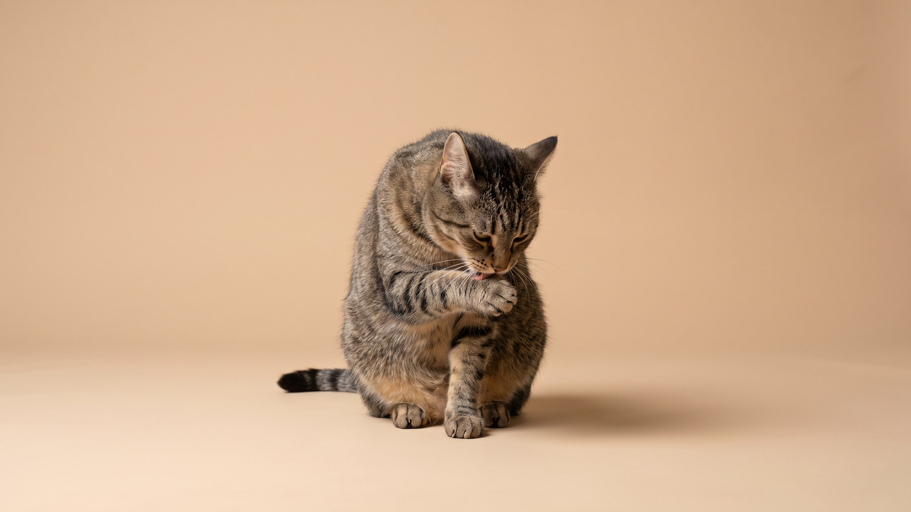

Вы погладили кошку, убрали руку, и она тут же начинает вылизывать то самое место. Многие владельцы воспринимают это как обиду: стирает прикосновение. На самом деле за этим поведением стоит несколько разных причин, и почти ни одна из них не означает, что кошке неприятно ваше общество. Разбираем, что происходит, и как понять, когда умывание всё же сигнал «хватит».
🐾 Хотите понять, что кошка говорит вам?
Опишите ситуацию или пришлите видео в AnimaLife — AI разберёт поведение вашего питомца и подскажет, что делать. Бесплатно, ответ за минуту.
Разобрать поведение → Разобрать в MAX →
У вас iPhone? AnimaLife есть в App Store
Запах важен для кошки так же, как имя для человека. У каждой кошки есть собственный химический профиль: комбинация феромонов из сальных желёз на коже. Когда вы гладите её, вы буквально накладываете на шерсть свой запах.
Вылизывание после поглаживания означает возврат к себе. Кошка не убирает вас, она восстанавливает привычную картину запахов. Это нейтральное поведение, связанное с самоидентификацией, а не с отвержением.
Поглаживание вызывает возбуждение нервной системы, даже приятное. Кошки используют вылизывание как способ успокоиться и вернуться в нейтральное состояние. Это называют замещающим поведением: когда уровень стимуляции вырос, животное переключается на знакомое ритуальное действие.
То же самое происходит после игры, после кормления, иногда просто при смене обстановки. Умывание здесь работает как выдох.
Кошки педантичны насчёт шерсти. Ваша рука проходит против ворса, сдвигает волоски в сторону, и кошка просто выравнивает их обратно. Это особенно заметно на животе, боках и за ушами: там шерсть ложится в определённом направлении, и любое отклонение кошке неудобно.
Никакого послания нет. Просто аккуратность.
Это единственная причина из четырёх, которая говорит о реальном дискомфорте. Кошки имеют довольно чёткий порог насыщения от тактильного контакта, и он у каждой свой. Когда порог пройден, они дают сигналы, и умывание может быть одним из них.
Как отличить спокойное умывание от «перегладили»:
Если вы видите эти сигналы до или во время умывания, остановитесь. Кошка чётко сообщает, что контакт вышел за её предел.
В большинстве случаев умывание после поглаживания нормальное поведение, которое не требует никаких действий. Просто наблюдайте за сигналами во время поглаживания, а не дожидайтесь умывания. Кошка скажет, когда ей хватит, задолго до умывания.
Лучше всего гладить кошку там, где она сама подставляет: за ушами, под подбородком, у основания хвоста. Если она вылизывается после этих зон без других тревожных сигналов, всё в порядке.
🐾 У вашей кошки так же?
Расскажите в AnimaLife, как ведёт себя ваш питомец, — приложение объяснит причину и даст пошаговый план. Бесплатно, без записи к специалисту.
Разобрать свой случай → Разобрать в MAX →
У вас iPhone? AnimaLife есть в App Store
🐾 Понравился разбор?
Подпишитесь на канал — каждый день разбираем по одному тревожному симптому у кошек и собак: что в пределах нормы, а когда пора к врачу. Подпишитесь, чтобы не пропустить разбор, который может спасти здоровье вашего питомца.
Материал носит информационный характер и не заменяет очную консультацию ветеринара.